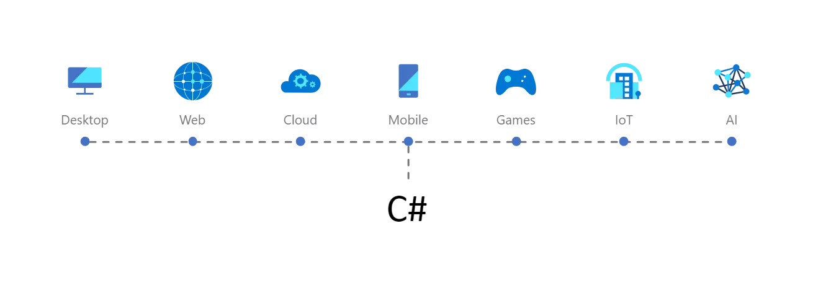

C# es el lenguaje más popular para el desarrollo de .NET. Con .NET, puede tener como destino cualquier tipo de aplicación que se ejecute en cualquier plataforma. Reutilice sus habilidades, código y bibliotecas favoritas en todos ellos en un entorno familiar. Esto significa que puede crear aplicaciones más rápido, con menos costo. Desde aplicaciones móviles que se ejecutan en iOS y Android, hasta aplicaciones de servidor empresarial que se ejecutan en Windows Server y Linux, o microservicios a gran escala que se ejecutan en la nube, .NET proporciona una solución para usted.
No ha perdido la potencia original de C, es decir, se puede acceder a bajo nivel al núcleo de los sistemas operativos, trabajar con punteros a memoria (muchos desarrolladores tienen verdadero pánico a los punteros) e interactuar con elementos físicos de los dispositivos, como tarjetas gráficas o puertos USB, por ejemplo. De hecho, nunca antes fue tan sencillo trabajar con ficheros, soportando de forma nativa archivos XML.
Además, como hemos comentado con anterioridad, C# es un lenguaje diseñado para su uso en .NET, cuyo objetivo de esta plataforma es crear aplicaciones de forma sencilla. Por tanto, este lenguaje se utiliza para diseñar aplicaciones en esta plataforma.
Se hace hincapié en ello, ya que este lenguaje se diseñó expresamente para la plataforma .NET, por lo que las características de .NET serán las propias de este lenguaje de programación:
Sencillez: C# elimina gran cantidad de elementos que son innecesarios en .NET. Por ejemplo, no se incluyen elementos pocos útiles como macros, herencias múltiples o la necesidad de un operador distinto del punto.
Modernidad: C# Incorpora de forma automática e intuitiva en su lenguaje elementos que se han demostrado con el paso de los años que han sido muy útiles para el desarrollo de aplicaciones.
Seguridad: Incorpora mecanismo para asegurar que los accesos a tipos de datos se lleven a cabo de forma correcta, por lo que se evita que generen errores difíciles de detectar.  Sistemas de tipos unificados: Todos los datos que obtenemos al programar C# se guardan en una base para que se puedan volver a utilizar posteriormente. Extensibilidad: puedes agregar tipos de datos básicos, operadores y modificadores cuando se vaya a programar. Versionable: Dispone de actualización y mejora continua, permitiendo crear versiones de tipo sin tener miedo a que, con la incorporación de nuevos integrantes, provoquen errores complicados de detectar.
You only need the --apple-use-keychain option on a mac. More details on adding keys to the SSH agent here.
Import all the public keys on the corresponding GitHub accounts You can quickly copy each key to the clipboard with the commands below. After each copy, Visit here while logged in to the corresponding GitHub account; Click the ‘New SSH key’ button and paste the public key from clipboard.